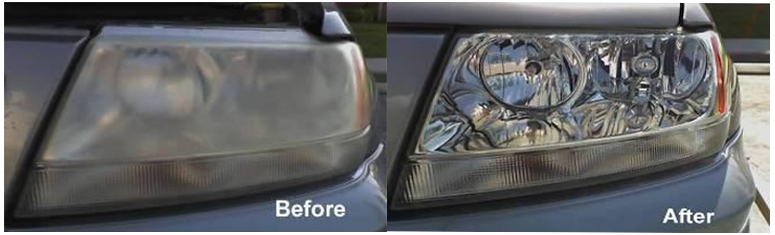

Headlight Restoration
Don't Replace it, let us restore it!
Ask out Service Advisor for details during your next visit or feel free to call to schedule an appointment. Restoration is done while you wait and usually takes approximately 15-30 minutes.
